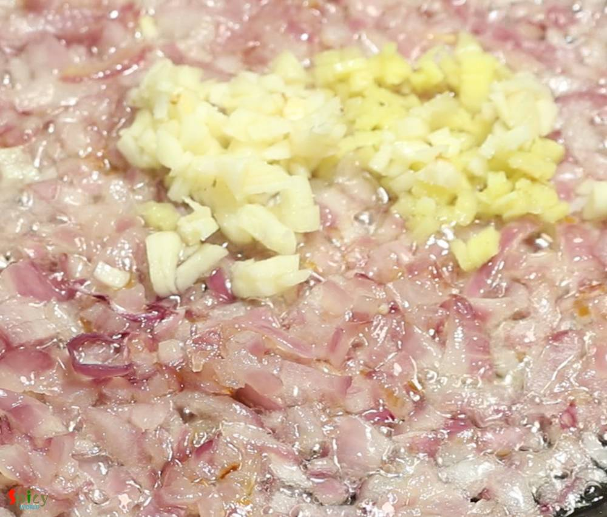
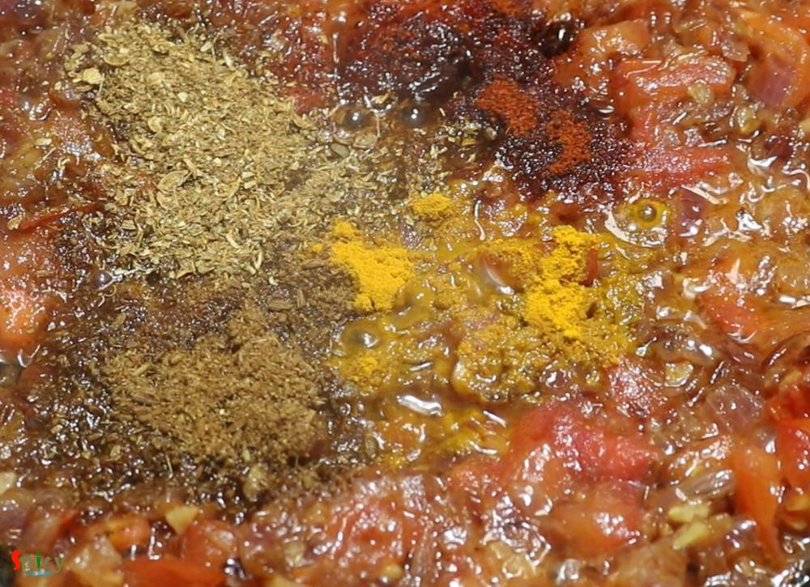
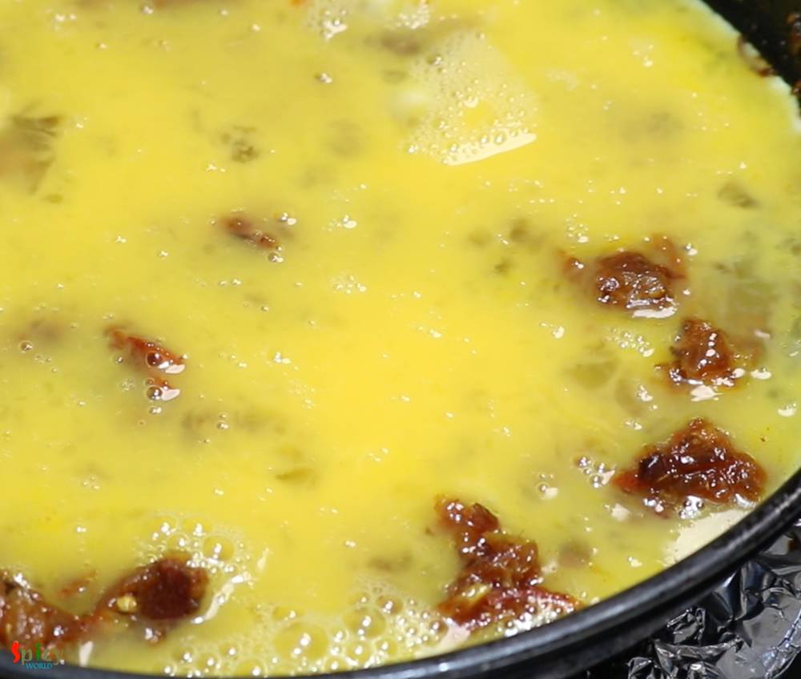
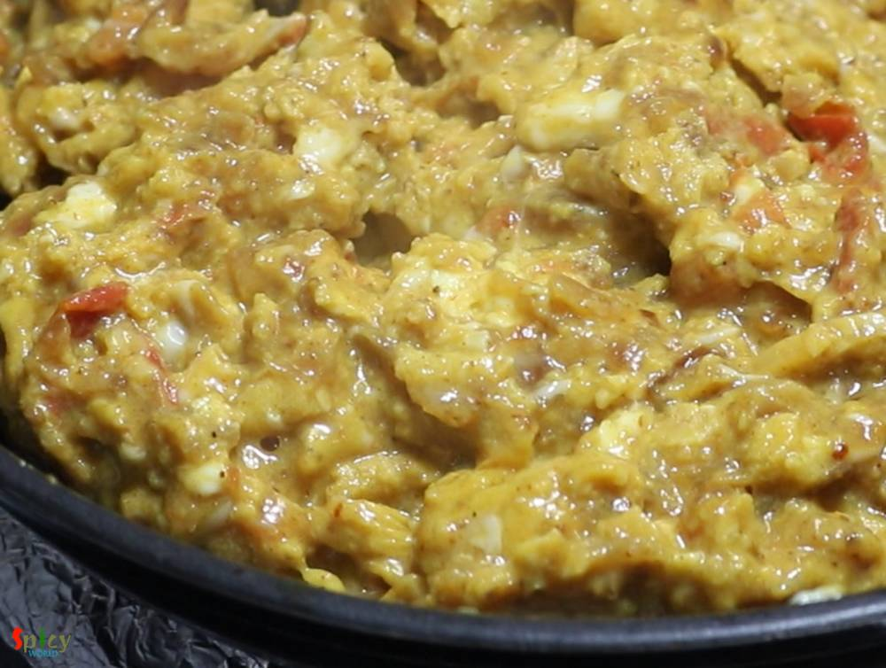
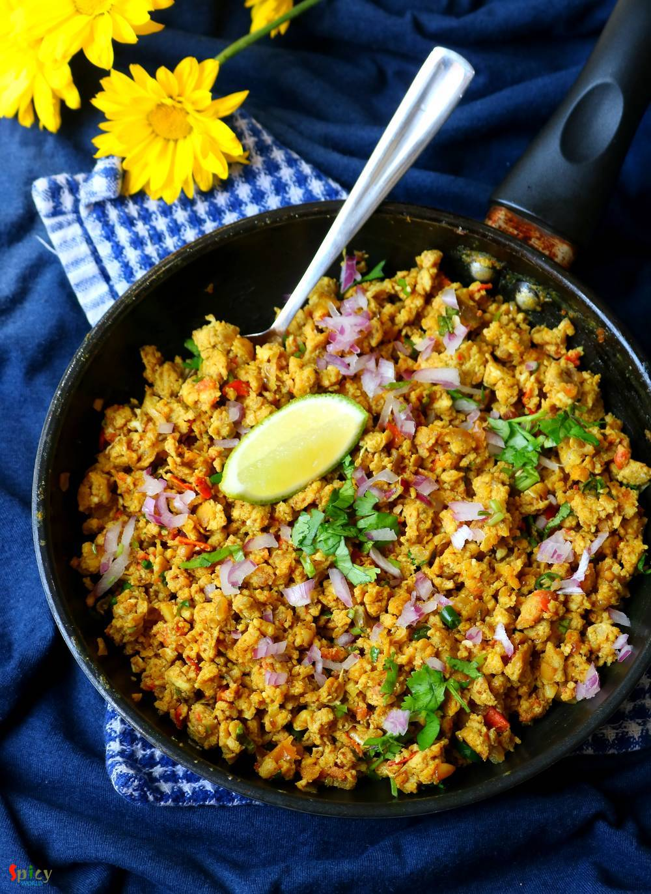
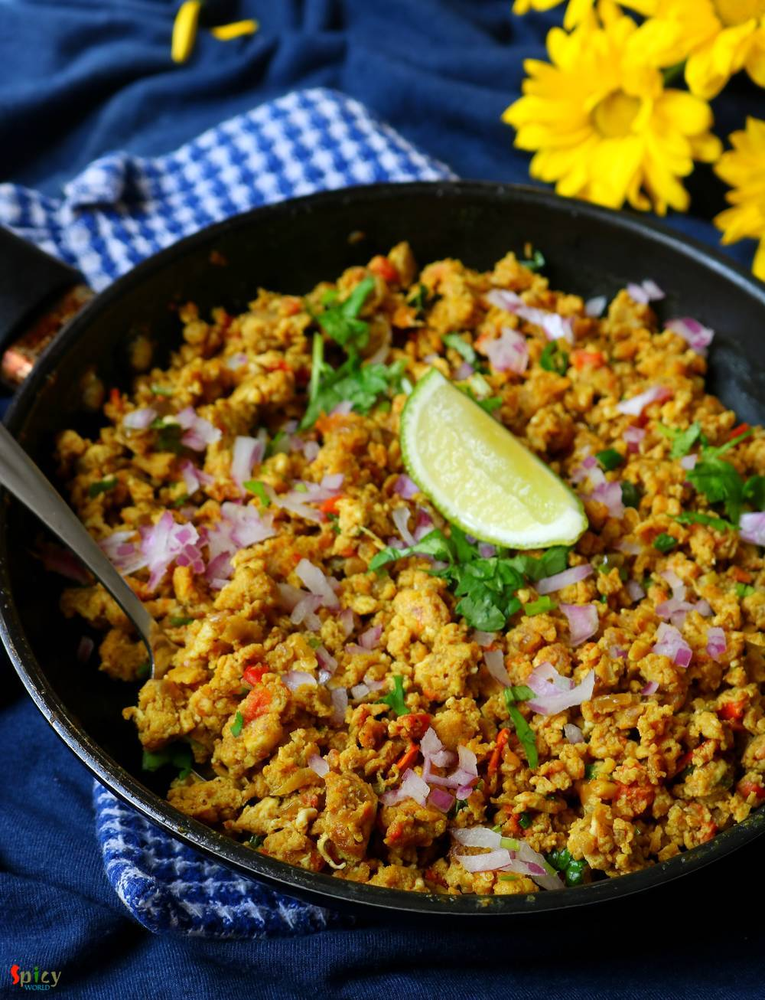

Simple and Easy Recipes
Anda Bhurji / Spicy Scrambled Egg
© 2016 Spicy World, Published on: Apr 26, 2019
Anything scrambled means Bhurji in India. Be it egg, paneer or nutrela, they all taste delicious. In this Egg Bhurji recipe first we will make a masala with onion and tomato, then eggs will be scrambled with that. Anda bhurji has no gravy but it is soft and juicy enough to pair with phulkas (roti) or pav (bread). You can make very good sandwich with them also. Try this recipe in your kitchen and let me know how it turned out for you.

Ingredients
- 4 eggs.
- 1 medium onion, finely chopped.
- 1 Tablespoon of chopped ginger.
- 1 Tablespoon of chopped garlic.
- 1 tomato, finely chopped.
- Spice powder 1 Teaspoon each of (turmeric powder, red chili powder, roasted cumin & coriander powder).
- 1 Tablespoon of meat / pav bhaji / chana / garam masala powder.
- Salt and sugar as per your taste.
- 2 green chilies, chopped.
- 1 Teaspoon of chaat masala.
- Some chopped coriander leaves.
- 1/4th cup of cooking oil.
- 2 Tablespoons of butter.


Steps
Heat oil and butter in a pan.
Add chopped onion along with little salt. Fry for 5 minutes.
Then add chopped ginger and garlic. Cook for 2-3 minutes.
When the onion becomes fully golden in color, then add chopped tomatoes. Mix well and cook for 3-4 minutes.
Then add all of the spice powder and some meat masala powder. Mix well for 2-3 minutes.
Now break all of the eggs in a bowl. Beat them well with a pinch of salt.
Add those beaten eggs in this masala. Stir on medium flame.
After 5 minutes of stirring they will turn little mushy.
After another 5-6 minutes eggs will look good (perfectly scrambled).
Lastly add chaat masala, chopped green chilies and coriander leaves. Mix well and turn off the heat.
Your Anda Bhurji is ready to serve.
Serve this hot with chapati, bread or rice.
")